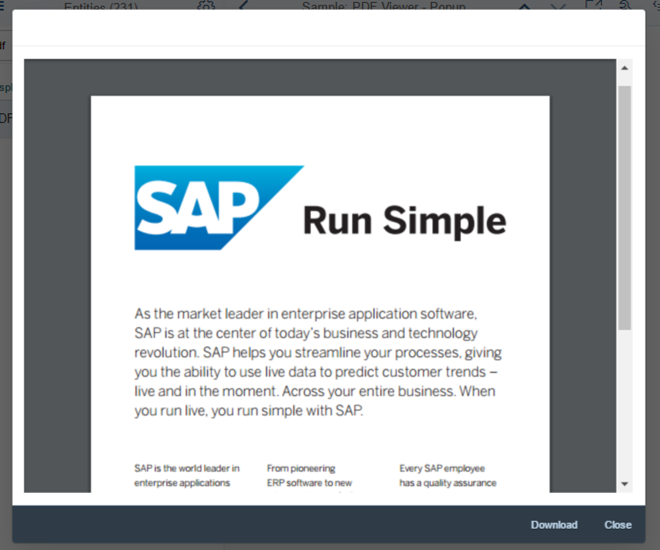

With
this release, OpenUI5 is
upgraded from version 1.46 to 1.48.
Third-Party Library Upgrades
The Handlebars.js library has been upgraded from version
3.0.3 to 4.0.5. If you access the parent contexts in your Handlebars
templates, make sure that you pass the compat flag when
compiling:
Handlebars.compile(source, {
compat: true
});
This change has also been applied to the OpenUI5 versions
that are still in maintenance (1.28, 1.38., 1.44).
QUnit version 2.3.2 has been added (module
sap.ui.thirdparty.qunit-2, resources
sap/ui/thirdparty/qunit-2.js).
New Features
Support Assistant and Other Support Tools
The new Support Assistant tool enables application developers to check whether
they have built their applications in accordance with the best practices for
building OpenUI5
apps. The tool uses a set of predefined rules to check all aspects of an
application, for example, accessibility, performance, data-binding, and more.
Support Assistant is integrated into One Page Acceptance Tests (OPA5) and can be
used as part of OPA tests.
We have also redesigned the other support tools, Technical Information
Dialog and Diagnostics, reworked the
Troubleshooting documentation section
under Essentials, and created a Troubleshooting tutorial.
Reuse Components
You now declare reuse components in the descriptor for applications
(manifest.json). A new factory function has been
introduced for creating reuse component instances within the context of the
current component. You can extend apps easily on the component level by
replacing the usage of a reuse component with a variant that modifies the
manifest.json values for the reuse component.
You don't have to migrate old applications to the new logic to keep them working.
But if you want to benefit from further improvements with regards to component
loading and performance, as well as component extensibility (replace reuse
component), you should consider updating the component usage accordingly.
There is a new theme parameter tool for finding the best-fitting semantic LESS
parameter for a new control. With this tool you can easily search, filter, and
preview theme parameters.
With the tool, you can also preview all supported SAP themes and find information
about the semantic parameter structure.
sap.m.MessageView: Displays a summarized list of different
types of messages. The MessageView is used to show the
contents of sap.m.MessagePopover, but it can also be used
in other container controls like sap.m.Dialog.
sap.m.MessageView also allows grouping of messages by
setting the property groupItems and defining a
groupName for each item. For
more information, see the API Reference and the samples.
sap.m.CustomTreeItem: Similar to
sap.m.CustomListItem for the
sap.m.List control, the
sap.m.CustomTreeItem control allows you to define
custom item content for sap.m.Tree. For
more information, see the API Reference and the sample.
sap.m.PDFViewer enables SAP Fiori developers to display PDF
files in a consistent way across all browsers and devices. It encapsulates
browser-specific PDF viewer plugins and provides a simple API to embed a PDF
file into a page or to open it in a dialog box. For
more information, see PDF Viewer, the API Reference, and the sample.

Improved Features
Improved Script Loading
If loading a resource fails, a second retry is done.
Date Intervals
The DateFormat can format two dates as an interval. For more
information, see Date Format.
OpenUI5
OData V4 Model
The new version of the OpenUI5 OData V4
model introduces the following features:
Automatic determination of $select and
$expand parameters for OData V4 requests by
setting autoExpandSelect in the model settings to
true.
Automatic loading of "cross-service references" (a service that
references metadata from other documents) by the OData V4 model when
metadata from the referenced document is needed.
Support of the V4-specific lambda operators
any and all on collections
with new filter operators FilterOperator.All and
FilterOperator.Any and it is possible to create
entities on relative bindings
You can now extend the testing capabilities of OPA with your own
extensions. For more information, see Extensions for OPA5 and the
API Reference.
Improved Controls
sap.f.Avatar: With the use of the new
detailBox aggregation, you can automatically open a
sap.m.LightBox instance on user interaction with the
sap.f.Avatar.
sap.f.DynamicPage: It is now possible to initialize the
control with collapsed header. To enable the feature, set property
headerExpanded to false.
sap.m.ComboBox now highlights matching characters in the
dropdown list. This behaviour is now aligned with all select controls.
sap.m.DatePicker: You can now set specific date or date
ranges as non-working days by using the new type of the
sap.ui.unified.DateTypeRange class,
sap.ui.unified.CalendarDayType.NonWorking.
sap.m.GenericTile: With a new overflow concept that allows
more flexibility in the layout of the tile designs, generic tiles are
displayed in LineMode like list items when the screen width
is less than 450px. With a screen width greater than 450px, the tiles are no
longer truncated and the complete text is shown in a wrapped in-line
design.
Compact and Cozy content densities are
available for small (< 450px) and large (> 450px) screens. For
more information, see the API Reference and the samples.
sap.m.PlanningCalendar:
You can now set specific date or date ranges as non-working days by
using the new type of the
sap.ui.unified.DateTypeRange class,
sap.ui.unified.CalendarDayType.NonWorking.
You can now expand the grouping of overlapping appointments in the
months view of the sap.m.PlanningCalendar. You can
do this by setting the new property
groupAppointmentsMode to
sap.ui.unified.GroupAppointmentsMode.Expanded.
sap.m.TextArea controls with a limited text length can
determine how to handle text that exceeds that length. By setting
showExceededText=true, you can decide if those
characters are visible or cut. The text area changes its value state and
shows a counter of the extra characters when the threshold is reached. For
more information, see the API Reference and the sample.
sap.m.UploadCollection: When grouping of
UploadCollectionItems you can now provide the grouping
feature for UploadCollection. After you have selected the
grouping criteria, the grouping information is displayed as group header in
the upload collection list. For
more information, see the API Reference and the samples.
sap.m.Wizard now allows editing of any step in the sequence.
By using the association currentStep and the method
setCurrentStep, you can programmatically reach and then
edit any step in the sequence. For
more information, see the API Reference and the samples.
sap.ui.layout.BlockLayout:
New options for coloring individual cells have been added. For each
BlockLayoutCell, you can set
backgroundColorSet and
backgroundColorShade. There are 11 predefined
color sets, each with 4 color shades. The sets and shades can be
easily customized in UI theme designer. You can also set an image as
the background of a cell.
An additional breaking point for M-sized displays has been added.
sap.tnt.ToolPage: IconTabBar can now be
used in sap.tnt.ToolPage. The ToolHeader
is enhanced to allow IconTabBar elements. When inside the
ToolHeader, the IconTabBar can use
only labels and no icons.
You can now have no tab selected by setting the
selectedKey property to a non-existing key
value.
When IconTabHeader is used on smartphones and
tablets, only completely visible tabs are displayed (no
truncation). The rest of the tabs will overflow.
sap.ui.table: You can now highlight items in the tables of
the sap.ui.table library
(sap.ui.table.Table,
sap.ui.table.TreeTable,
sap.ui.table.AnalyticalTable), for example to indicate
an error. For
more information, see the API Reference for sap.ui.table.RowSettings and
sap.ui.table.Table.setRowSettingsTemplate, and the sample.
sap.ui.unified.Calendar:
You can now show and hide week numbers with the use of a new
property showWeekNumbers. This feature is
disabled for the Islamic calendar.
You can now set specific dates or date ranges to be displayed as
non-working by using the specialDates
aggregation and
sap.ui.unified.CalendarDayType.NonWorking
enumeration type.
sap.ui.unified.ColorPicker: A responsive variant of the
color picker control is now available in the sap.ui.unified
library that is compatible for use with controls from the other responsive
OpenUI5
libraries.